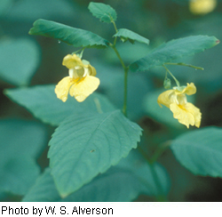

Plant Links
General
- United States Department of Agriculture, Plants Database
- Flora of North America Project
- Illinois Plant Information Network
- Gallery of Illinois Plants, Illinois Natural History Survey
- Illinois' Best Plants, Chicago Botanic Garden
- Digital Flowers
- The International Plant Names Index
Threatened and Endangered Plants:
- Center for Plant Conservation, National Collection of Endangered Plants
- Illinois Department of Natural Resources, The Illinois Endangered Species Protection Board
- Indiana Department of Natural Resources, Endangered Species
- Wisconsin Department of Natural Resources, Wisconsin State Threatened and Endangered Species
On-line guides:
- UW-Stevens Point -- Plants of Wisconsin
- UW-Green Bay -- Pteridophytes of Wisconsin: Ferns and Fern Allies
- Missouri Plants - Photographs and descriptions
- Discover Life's IDNature Guides
- Plant Systematics.org's on-line key to Dicot Families - Click on Diagnostic Keys, then choose Key to Families of Dicotyledons
Online plant glossaries:
Information on plants for cultivation or other uses:

Yellow jewelweed
Related Pages
Information provided on this page applies to the Chicago Region and may not be relevant or complete for other regions.
Footer Menu
Funded by Institute of Museum and Library Services (IMLS)
Citation: The vPlants Project. vPlants: A Virtual Herbarium of the Chicago Region. http://www.vplants.org
Copyright © 2001–2009 The vPlants Project, All Rights Reserved.
The Morton Arboretum, The Field Museum, Chicago Botanic Garden, Additional Partners